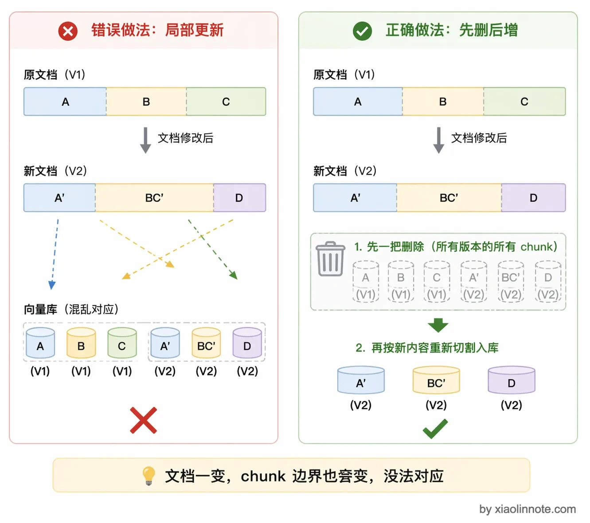
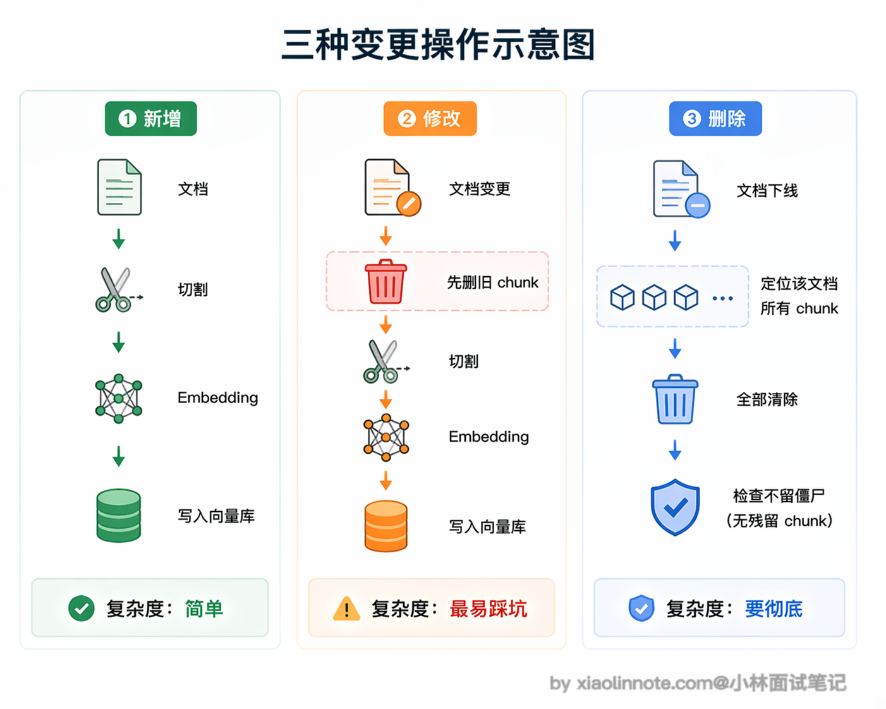
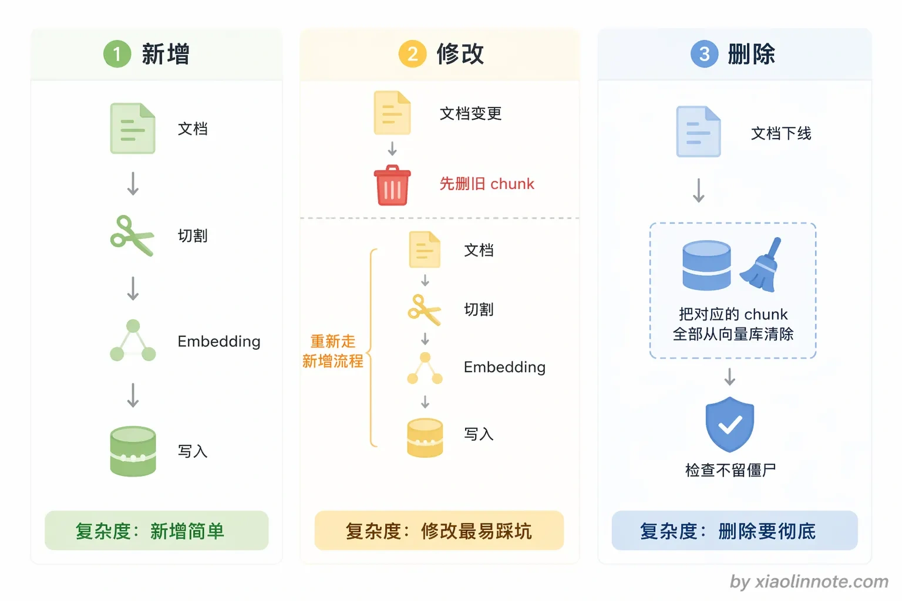
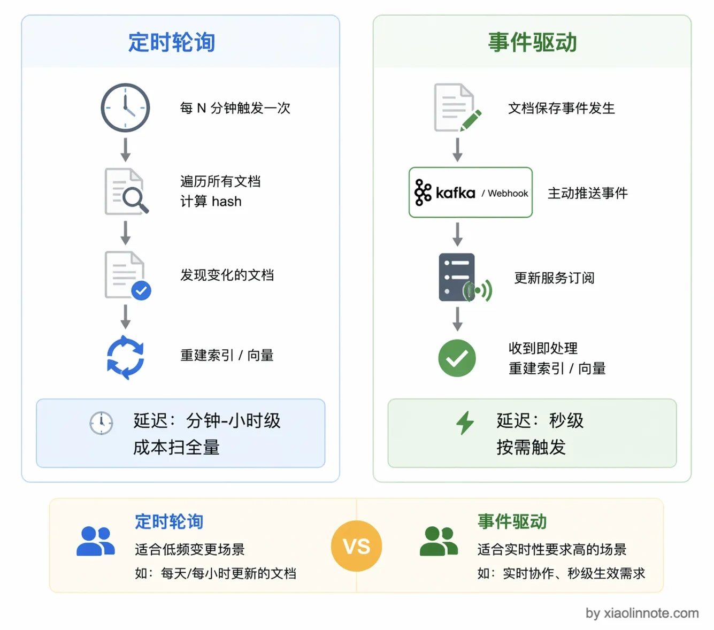
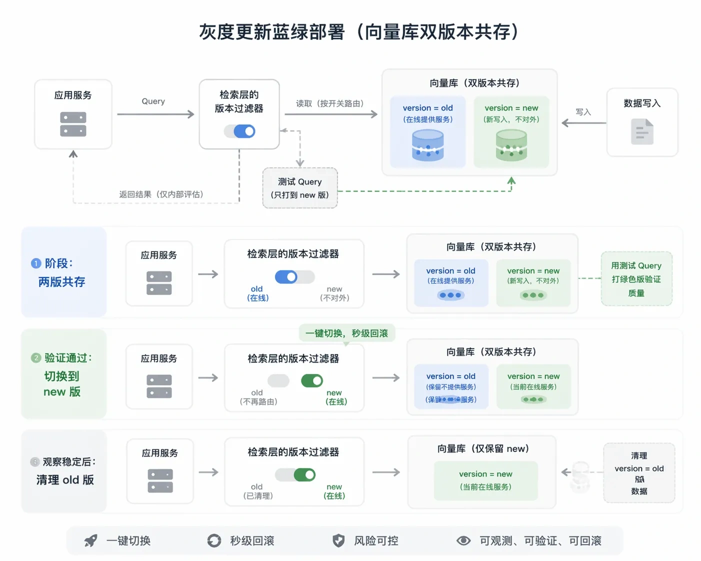

RAG 知识库如何实现动态与持续更新？
👔面试官：你们 RAG 知识库上线之后，文档更新了怎么办？总不能每次改个文档就把整个知识库重建一遍吧。
🙋♂️我：可以直接找到变了的那个 chunk，更新它的向量就行了。
👔面试官：你以为改了一段文字，chunk 的边界还能和之前一模一样？文档内容一变，切割结果可能完全不同，你根本没法把旧 chunk 和新 chunk 一一对应起来做局部更新。
🙋♂️我：那我把整个文档对应的所有 chunk 都删掉，然后重新入库？但是系统怎么知道哪些文档变了呢？
👔面试官：这还算靠点谱，但你怎么感知文档变更？总不能让人告诉你吧。
接下来看看 RAG 知识库动态更新的完整方案。
💡 简要回答
我理解知识库更新的核心挑战是，文档变了，对应的 chunk 和向量都要跟着变，而且要做到增量处理，不能每次全量重建。我们的通用方案是给每个文档算一个内容 hash，通过轮询或者监听数据源变更，检测到文档新增、修改、删除的时候，先清掉旧的向量，再重新切割入库。对于实时性要求比较高的场景，我会用消息队列比如 Kafka 做变更事件驱动，实现秒级的入库。
📝 详细解析
知识库更新这个问题，很多同学做 RAG Demo 时不会碰到，一旦上生产就必须面对。文档本身是会变的，产品手册改版、政策文件更新、FAQ 内容迭代，如果知识库不及时跟进，RAG 就会一直给用户返回过期信息。所以动态更新能力是 RAG 系统投入生产的必备条件，而不是锦上添花的功能。
为什么更新 RAG 知识库比更新普通数据库麻烦？
在讲具体方案之前，先搞清楚一个关键问题：为什么 RAG 知识库的更新不能像普通数据库那样直接 UPDATE？原因在于，普通数据库更新一条记录，直接 UPDATE 就行，数据是独立的，改一条不影响别的。但 RAG 知识库的麻烦在于：原始文档和向量库之间不是一对一的关系，而是一对多的关系。
一篇文档会被切割成几十甚至上百个 chunk，每个 chunk 分别 Embedding 后存入向量库。当文档内容发生变化时，你不能简单地「更新一条记录」，因为文档结构变了，切割结果可能完全不同，chunk 的数量、边界、内容都会变。
所以 RAG 知识库在工程上最可靠的更新逻辑是先删掉旧文档对应的所有 chunk，再重新切割入库，即「先删后增」，而不是在原来的 chunk 上做局部更新。理论上如果 Chunking 策略完全稳定（比如按固定 token 窗口切），某些场景可以做局部更新，但生产环境里 chunk 边界一变就全乱套，与其在这种不确定性上博弈，不如直接走「先删后增」简单可靠。

抽象来看，知识库的变更只有三种操作类型。新增是最简单的，文档以前不存在，走一遍完整的「切割 -> Embedding -> 写入」流程就行，没有任何历史包袱。
修改是最容易踩坑的操作，值得多说几句。很多同学第一次做这个功能，直觉上认为「只改了一段文字，更新那一个 chunk 就好了」，这个思路在实际中行不通。
原因很简单：文档内容一改，切割边界就变了，原来第 3 个 chunk 的内容可能现在分散在第 3 和第 4 个 chunk 里，你根本没法把旧 chunk 和新 chunk 一一对应起来做「局部打补丁」。就像装修时把一堵墙拆了重建，不能指望原来的插座位置还能对上，整面墙的电路要重新布。所以修改的正确做法是推倒重来：把这篇文档之前入库的所有 chunk 全部删掉，然后重新按新内容切割入库。操作虽然暴力，但是可靠，也是唯一不会出 bug 的做法。
删除最直接，文档下线了，把它对应的所有 chunk 从向量库中清除，不能留着「僵尸 chunk」，否则用户还是会检索到这些已经失效的内容。

如何知道文档是否发生了变化？
搞清楚了更新策略是「先删后增」，下一个绕不开的工程问题就是：系统怎么知道一篇文档「变没变」？

最常用的方案是内容 hash。每次文档入库时，计算文档内容的 MD5 或 SHA256 摘要，把这个 hash 值和文档 ID、对应的 chunk ID 列表一起存下来（存在 Redis、数据库都行）。下次检测到这篇文档时，重新计算 hash 和存储的值对比：相同说明内容没变，跳过；不同说明内容有更新，触发重处理流程。
你可能会担心，每次都算 hash 性能会不会有问题？完全不会。hash 运算非常快，哪怕只改了文档里的一个标点符号，hash 值就会完全不同，不会漏掉任何变更，计算成本极低。
实际工程里还有一个进一步优化：先用「最后修改时间」这个轻量字段做粗筛，只对时间戳发生变化的文档才计算 hash。比如数据源每晚同步一次，上百万篇文档里真正改过的可能只有几千篇，这样能把 99% 的文档过滤掉，hash 只对小部分计算，开销再降一个量级。
文档 ID 和 chunk ID 的设计
有了变更检测的方案，还有一个容易被忽视但非常关键的设计问题：chunk ID 的命名规范。这个东西一开始不设计好，后面做更新的时候会非常痛苦。
为什么？因为删除一篇文档的所有 chunk 时，你需要能快速找出「这篇文档对应了哪些 chunk」。
常见的做法是让 chunk ID 带上文档 ID 作为前缀，比如 product_manual_v3_chunk_001、product_manual_v3_chunk_002，这样按前缀就能批量查找和删除对应的所有 chunk。
另一种做法是在每个 chunk 的 metadata 里存上文档 ID 字段（比如 source_doc_id: "product_manual_v3"），向量库一般都支持按 metadata 字段过滤批量删除，效果是一样的。无论选哪种方式，关键是从一开始就把文档和 chunk 的关联关系设计好，等到需要更新时再临时想办法，会很狼狈。
两种主流的变更感知方式
前面说了怎么检测变更（hash）和怎么处理变更（先删后增），那系统怎么在第一时间感知到文档需要更新？有两种主流方案，各有适用场景。

第一种是定时轮询（Polling）。系统按固定时间间隔（比如每天凌晨两点、每小时一次）扫描所有文档，对比 hash 值，把有变化的文档重新处理。这种方案实现简单，不依赖任何外部系统，适合文档更新频率低、对实时性要求不高的场景，比如内部知识库、产品文档这类一周才改几次的内容。缺点是有延迟，文档改完之后要等到下一个轮询周期才会生效；而且如果文档数量很多，全量扫描本身也是一笔开销，大多数文档根本没变，却每次都要算一遍 hash。
第二种是事件驱动（Event-Driven）。数据源有变更时，主动发出一条消息（通过 Kafka、RabbitMQ、或者 Webhook），知识库更新服务订阅这些消息，收到事件立刻处理。这种方案延迟低，文档变更后几秒内就能在知识库里生效，适合实时性要求高的场景，比如客服知识库（运营刚更新了退款政策，要求立刻在客服机器人里生效）、新闻资讯类应用（新文章发布就要入库）。代价是需要数据源支持发消息的能力，系统架构也更复杂一些。
不少现代化的内容管理工具（Confluence、Notion、语雀等）都支持 Webhook，文档保存时会自动向你配置的地址推送一条 HTTP 请求，天然适合做事件驱动更新，不需要引入消息队列这么重的组件。
全量重建是最后的手段
除了增量更新，还有一种「核弹级」方案：定期把整个知识库推倒重建。把所有文档重新切割、Embedding、写入，相当于从零开始建一遍。
你可能会想，全量重建这么暴力，谁会用？其实这个方案的优点恰恰在于逻辑最简单，不需要维护文档和 chunk 的对应关系，不需要 hash 检测，也不用担心有旧 chunk 漏删的问题。缺点也很明显：如果知识库文档量大，重建一次要消耗大量时间和 Embedding API 费用；重建过程中知识库不可用（或者用旧数据），会影响线上服务。
实际场景里，全量重建一般在两种情况下用：知识库规模很小（几十篇文档，重建几分钟搞定）；或者做了重大架构调整（比如换了 Embedding 模型、改了 Chunking 策略），新旧向量不兼容，必须全量重建。平时不推荐依赖这个方案。
灰度更新：稳妥地切换新版本
对于核心的生产知识库，直接删旧数据、写新数据风险还是太大了。万一新切割的内容有问题，想回滚都来不及。那怎么办？更稳妥的做法是不直接删旧数据，而是先并行写入新版本，验证没问题再切换。
具体操作是：把新版本的 chunk 写入时打上 version=new 的标签，旧版本保留 version=old。在验证阶段，用一批测试问题同时跑新旧两个版本，对比答案质量，确认新版本没有引入退化。验证通过后，把检索时的版本过滤条件从 old 切换到 new，最后再清理掉旧版本的 chunk。
这个方案有点类似软件发布里的蓝绿部署，好处是：出了问题可以立刻回滚（把版本过滤条件切回去），切换是秒级的，不需要重新入库。对于知识库质量要求很高的场景，比如金融、医疗领域的问答系统，这种谨慎的更新策略是很有必要的。

把几种更新方案的特点做个对比，实际选型时可以对照着看：
| 方案 | 延迟 | 实现复杂度 | 适用场景 |
|---|---|---|---|
| 定时轮询 | 分钟 - 小时级 | 低 | 文档更新频率低，实时性要求不高 |
| Webhook 触发 | 秒级 | 中 | 数据源支持 Webhook，如 Confluence、Notion |
| 消息队列 | 秒级 | 中高 | 大规模、高并发更新，生产环境首选 |
| 全量重建 | 分钟 - 小时级 | 低 | 文档量小，或知识库结构大改，不推荐常用 |
总结一下：生产环境推荐「事件驱动 + hash 变更检测 + 先删后增」的组合方案，兼顾实时性和数据一致性。新增和删除操作相对简单，修改操作记住一个原则，永远先删掉旧的所有 chunk，再重新入库，不要尝试「局部更新」，这是最可靠也最不容易出 bug 的做法。
🎯 面试总结
回到开头对话的问题，知识库更新绝对不能尝试「只更新变了的那个 chunk」，因为文档内容一变，chunk 的切割边界就完全不同了，没法做局部更新。
正确的做法是给每个文档算内容 hash 来检测变更，检测到变化后先把旧文档对应的所有 chunk 删掉，再重新切割入库，也就是「先删后增」。变更感知方面，低频场景用定时轮询就够了，高频场景用 Kafka 或 Webhook 做事件驱动，实现秒级入库。生产环境推荐「事件驱动 + hash 检测 + 先删后增」的组合方案，同时要做好 chunk ID 与文档 ID 的关联设计，这样删除和更新才有据可查。